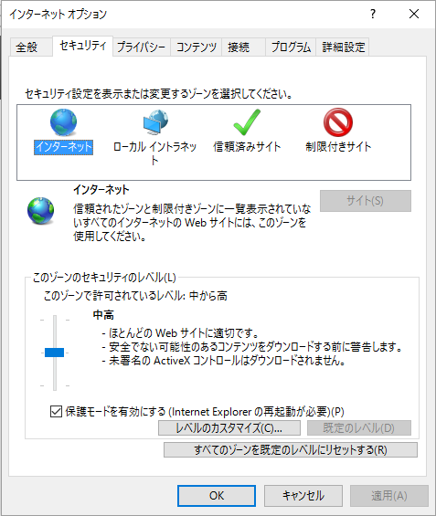
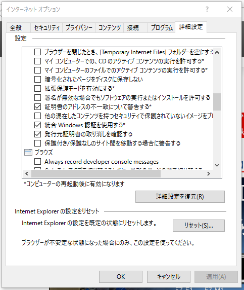

IE
IEでテストを実行するための環境を構築します。
テスト端末
IE11が動作するWindows 7以降を使用してください。
ドライバの配置
IE用のドライバであるIEDriverを端末に配置します。
Selenium公式サイトより、The Internet Explorer Driver Serverをダウンロードし、Selenium WebDriverと同一のフォルダに配置してください。
IEの設定
保護モードの設定
インターネットオプション→セキュリティから、インターネット、ローカルイントラネット、信頼済みサイト、制限付きサイトの4つに対して「保護モードを有効にする」のチェックを入れます。
拡張保護モードの設定
インターネットオプション→詳細設定から「拡張保護モードを有効にする」のチェックを外します。
